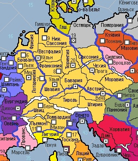

Особым межгосударственным образованием в игре является СРИ. В СРИ входят страны, указанные на ниже приведенной карте.
Особенности СРИ:
1) Все страны, входящие в СРИ, составляют постоянно действующий Оборонительный союз в случае агрессии стран, не входящих в СРИ. Войны внутри СРИ возможны. При этом общий Оборонительный союз стран-СРИ не действует. Каждая страна может вести войны, основываясь только на собственных дипломатических договоренностях. Император СРИ не может вести агрессивные войны внутри СРИ и всегда выступает как союзник страны, на которую напал другой член СРИ.
2) Возглавляет СРИ Император, которым на пожизненной основе избирается правитель одной из стран, входящих в СРИ. Каждая страна при избрании Императора имеет 1 голос.
3) Страны СРИ вносят налог, поступающий в распоряжение Императора и передают Императору 1 МП.
4) Император может принимать Имперские Законы, входящие в лимит законов его страны. Имперские законы распространяют свое действие на все страны СРИ.
Папская область является страной, возглавляемой духовным лидером католиков – Папой Римским. Эта страна передается в управлении игроку, чей кандидат побеждает на выборах и становится следующим Папой.
Особенности Папства:
1) Страны-католики уплачивают особый церковный налог, поступающий в распоряжение Папы..
2) Папа – избранный персонаж-священник, выдвинутый на этот пост странами католиками. Занимает его пожизненно. Католические страны участвуют в избрании Папы, обладая на выборах таким количеством голосов, который указан в их балансе.
3) Папа может оказывать финансовую помощь странам-католикам в пределах лимита переводов.
4) Папа может издавать Буллы, входящие в лимит законов его страны. Некоторые Буллы распространяют свое действие на все католические страны.
5) Папа может отлучать от церкви (придавать анафеме) католические страны. Запись о наложении Анафемы вносится в свод актов дип.состояния страны. Анафема снижает на -1 текущую стабильность в отлученной стране и не позволяет такой стране заключать дин.браки.
6) Папа может созывать КП (не более 1 КП за жизнь Папы).
КП – военная миссия, организованная и проводимая по особым правилам.
1) КП могут быть организованы по глобальным ивентам или по решению Папы (стоит -50 о/в).
2) КП могут быть созваны только в отношении конкретной иноверной страны и должны иметь цель – захват определенной провинции у этой страны.
3) Определяется страна-лидер КП.
4) Все страны-католики могут присоединиться к КП, передав Лидеру по 1 юниту из своего баланса. Полученные Лидером войска-крестоносцев могут быть использованы им только на цели КП, собраны в отдельную армию/армии отраженные в его балансе. Лидер несет все расходы по содержанию данными войсками и управляет ими. Вместо юнита Лидеру могут передаваться по 1 ТОР для осуществления перевозок войск по морю.
5) Определяется точка сбора КП – локация на территории любой католической страны. Эта локация является местом нахождения армии/армий КП в балансе страны Лидера. На сбор КП отводится 1 ход.
6) Общая продолжительность КП составляет не более 5 ходов, если условием глобального ивента не установлено иное.
7) Цель КП достигается при условии захвата установленной локации. В этом случае данная локация может быть присоединена к территории соседней католической страны, если она была Лидером КП или получены другие эффекты, установленные глобальным ивентом по данному КП.
8) При недостижении цели КП Папство и страна Лидер получают штраф -1 стаб.
9) После окончания КП переданные Лидеру войска странами-католиками или ТОРы – распускаются.